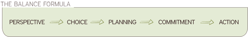

BALANCE
Balance coaching is about powerful choices and intentional action.
The core skill of Balance coaching is the ability to identify and choose your perspective and to make a conscious commitment to action.
In this course, you will learn to guide clients toward making powerful life choices and selecting the experiences they want most, rather than being at the mercy of their circumstances.
Before your course
Course Manual
Download the Balance course manual by clicking on the photo of the manual cover to the right.
If you have time before your course, scan through the manual to get familiar with the material. Pay special attention to the areas listed in the Pre-course Reading below.
Pre-course Reading (The pre-reading may be done during the course if you will have access to your manual in the evenings of days one and two.)
Review Section 1: Basics and Section 2: Resources and Tools in preparation for work on day two of your course.
If for any reason you are unable to complete the pre-reading and won’t have access to your manual in the evenings of days one and two of the course, please plan to do the reading shortly after course completion.
During your course
Notice the different perspectives all around you. Be willing to try on perspectives that seem uncomfortable or foreign to you.
Set up a client for your practice coaching session on the evening of day two of your course.
Arrange your life so that you can dive in and have your attention fully on the course and the experience during your three days.
Do your homework.
After your course
Developing coaching skill is all about practicing. Here are some ways you can practice and sustain your new skills before your Process course:
- Tell people that you have an assignment to practice Balance coaching. Ask them to do sample sessions with you and practice Balance coaching with them.
- Use these practice sessions to enroll a few new clients. Choose the number of clients that is right for you.
- Charge your clients the amount of money that feels right to you. Let them know you are in training to become a professional coach. Meet with them three to four times per month for a specific amount of time.
- Review the suggested structures for keeping clients in action. Work with your clients to develop structures that keep them in action.
 - Work with the Balance Formula until you are familiar with each step. For example, spend one day listening for perspectives, spend another day brainstorming new perspectives, listen for perspectives in everyday conversation, etc...

(North American Paper Size)
» Download Balance Manual
(International Paper Size)
“In the long run, we shape our lives, and we shape ourselves. The process never ends until we die. And the choices we make are ultimately our own responsibility.”
Eleanor Roosevelt